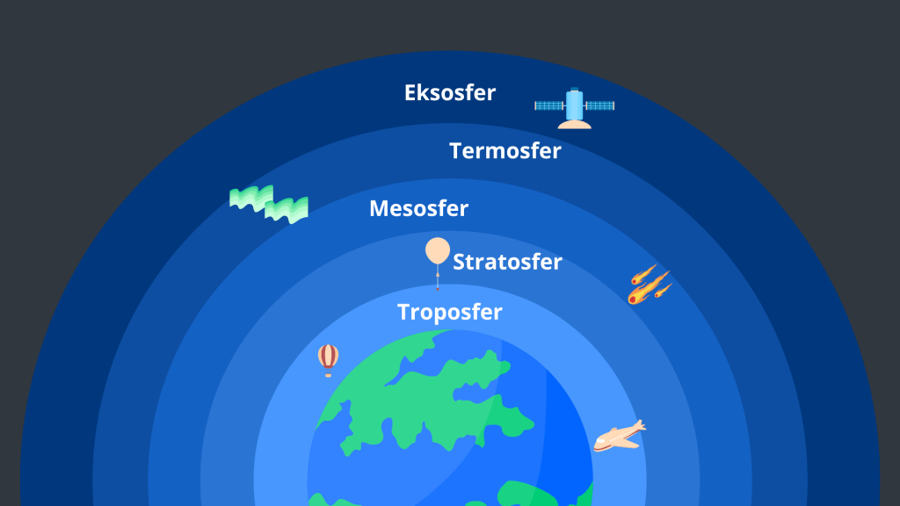

Struktur Atmosfer
Lapisan langit yang menjaga bumi: dari troposfer sampai eksosfer.
Mengapa Atmosfer Penting?
Atmosfer ibarat selimut planet: terlalu tipis kita kedinginan, terlalu tebal kita kepanasan. Selain melindungi dari paparan sinar matahari, atmosfer juga menjadi tameng meteor sehingga terkikis sebelum sampai permukaan.

Struktur atmosfer dan perannya.
Struktur Lapisan Atmosfer
Troposfer (0–12 km)
Tempat manusia, hewan, tumbuhan; cuaca sehari-hari. Suhu turun seiring ketinggian.
Stratosfer (12–50 km)
Lapisan ozon melindungi dari UV; suhu naik dengan ketinggian.
Mesosfer (50–75 km)
Suhu turun tajam hingga -120°C; meteor terbakar di sini.
Termosfer (80–800 km)
Ionisasi partikel memunculkan aurora; sangat panas, memantulkan gelombang radio.
Eksosfer (>800 km)
Bagian terluar, gravitasi lemah, transisi ke ruang angkasa.
Kesimpulan
Setiap lapisan punya peran: troposfer untuk cuaca, stratosfer untuk proteksi UV, mesosfer memecah meteor, termosfer memantulkan radio & memunculkan aurora, eksosfer sebagai gerbang luar angkasa.
Mulai Kuis
Siap menebak lapisan mana yang melakukan apa? Soal dan urutannya diacak setiap kali.